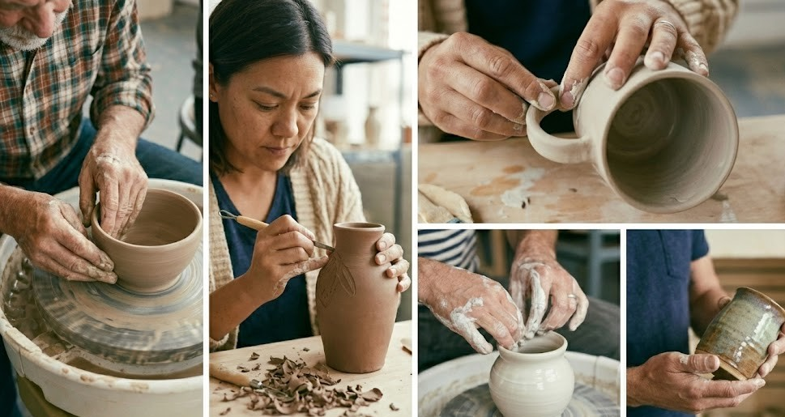

Studio Dimi Nasıl Doğdu?
Toprağın sabrı ve ipliklerin renkli dünyasıyla başlayan bir yolculuk...

Her şey bir parça çamurun parmaklarımın arasında şekil almasıyla başladı. Başlarda sadece bir hobi olan bu tutku, zamanla dokulara olan merakımla birleşti ve punch nakışının o yumuşak dokusu seramiklerimin sert yüzeyine eşlik etmeye başladı.
Studio Dimi, sadece bir marka değil; yavaşlamanın, üretmenin ve her parçanın kendine has kusurlarındaki güzelliği bulmanın bir sonucudur. Atölyemizde sadece objeler değil, aynı zamanda anılar ve hisler tasarlıyoruz. Sizleri de bu samimi hikayenin bir parçası olmaya davet ediyoruz.